Todo List Application
How to run the application
- Open Command prompt
- cd into the directory of the project
- run the following command:
npm install - Open index.html using your browser
User Guide
-
Upon running index.html, you will see the following page
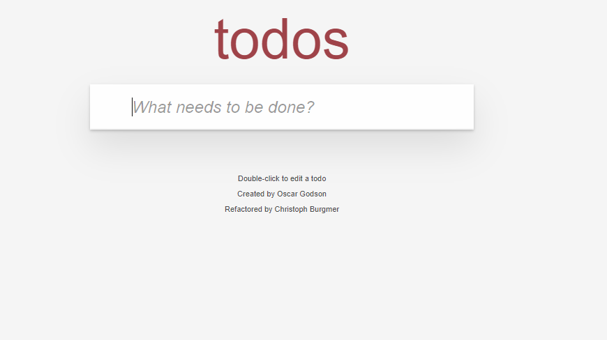
-
To add a new task, type the name of the task and press ENTER, as shown below
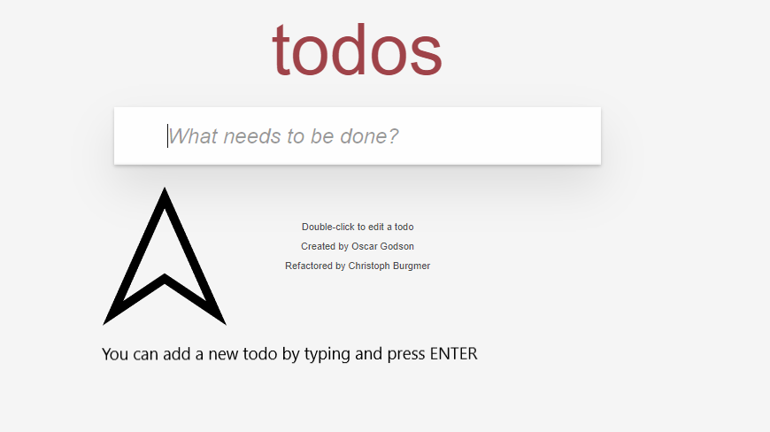
-
After pressing ENTER, it will show as
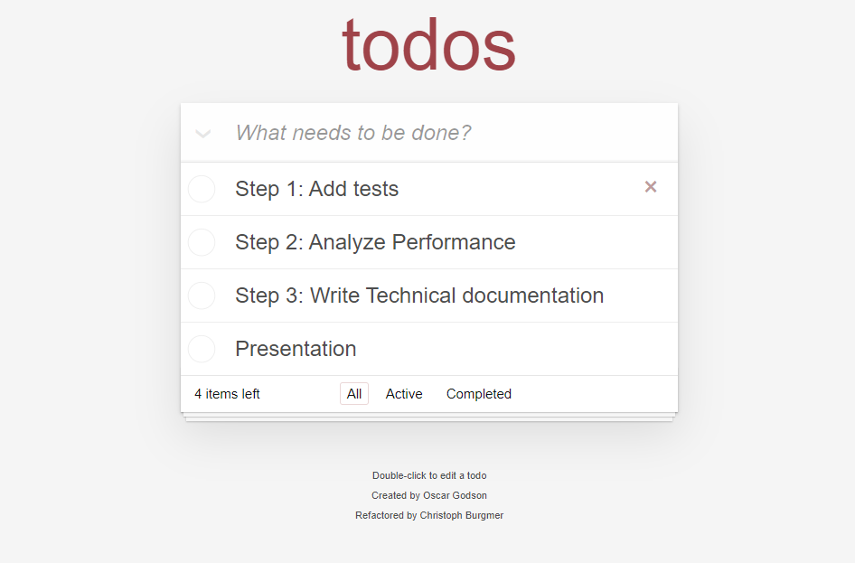
-
To mark a task as Completed, you can click on the checkbox on each task item, as highlighted below
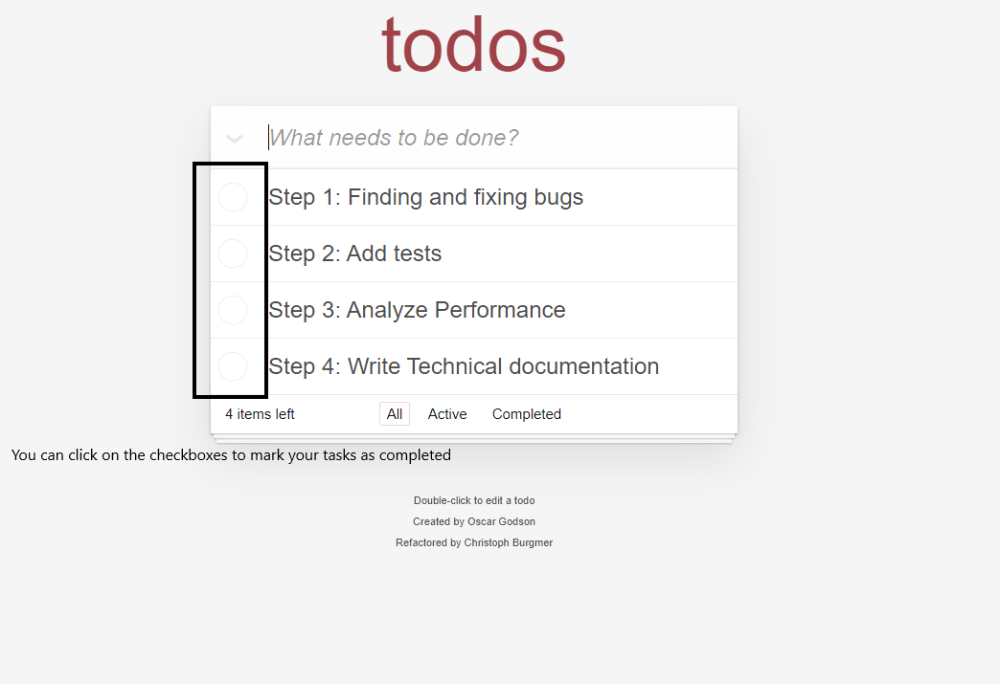

-
All the Completed tasks can be seen in the separate "Completed" tab / filter
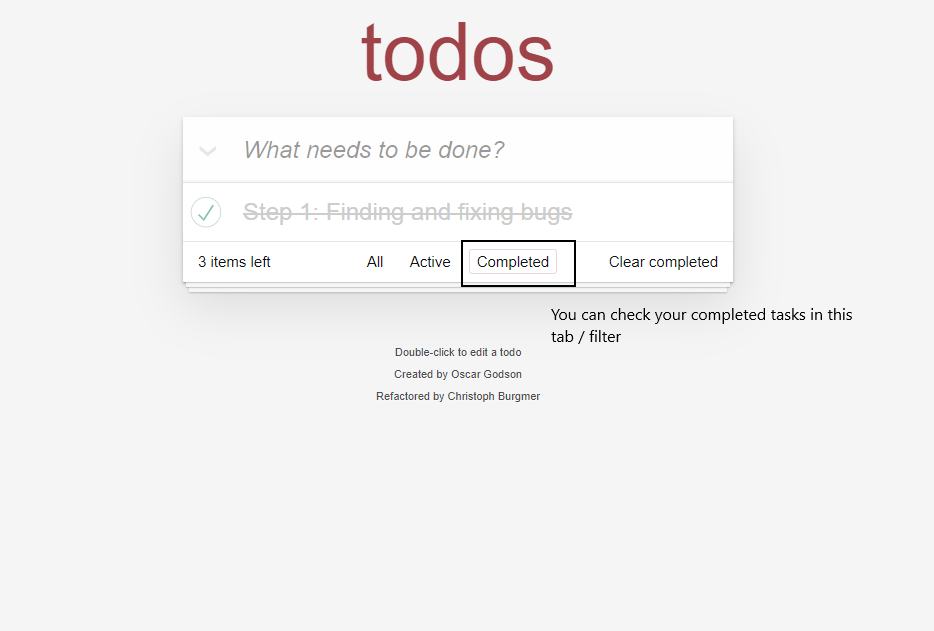
-
You can check all the "Active" tasks in the Active tab. "All" tab will contain both active and completed tasks
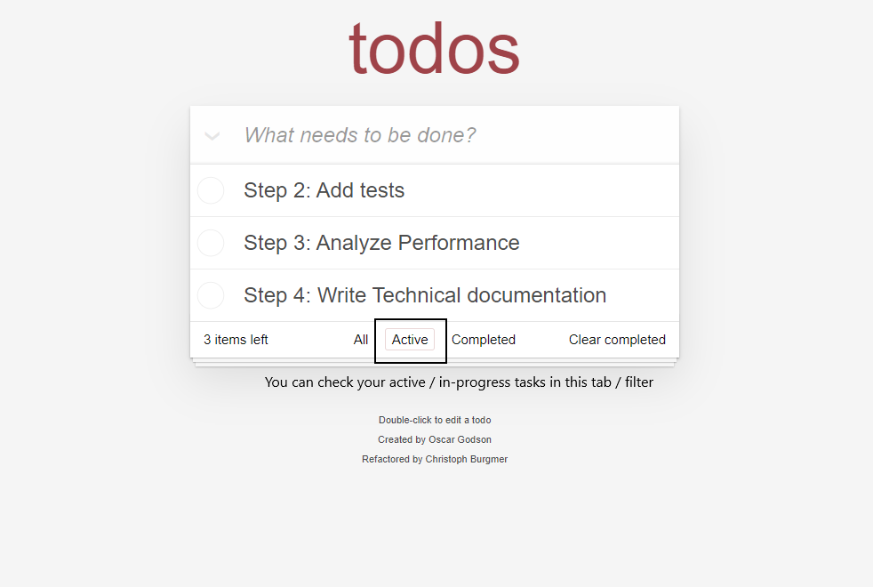
-
On the bottom left you can see the number of tasks which are active. Also, there's a button on bottom right to clear the tasks which are completed
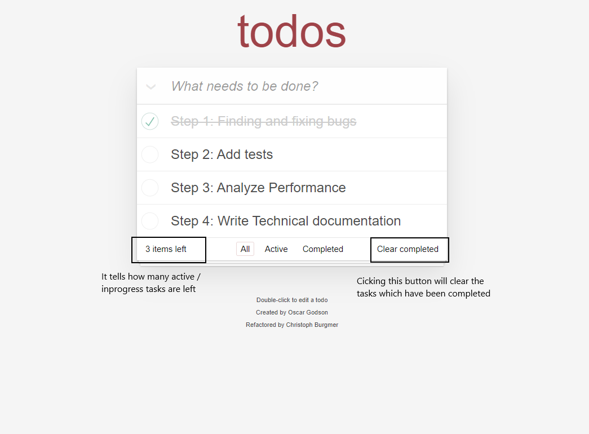
-
To mark all the tasks as "Completed" or "Active" again, you can click this button
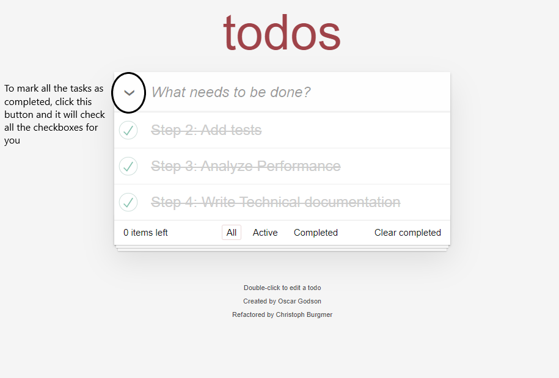
-
If you want to edit a task, "double click" on a task and the task will be opened in the edit mode for you to edit it. Pressing ENTER will save the update and ESC will not save it and get out of edit mode
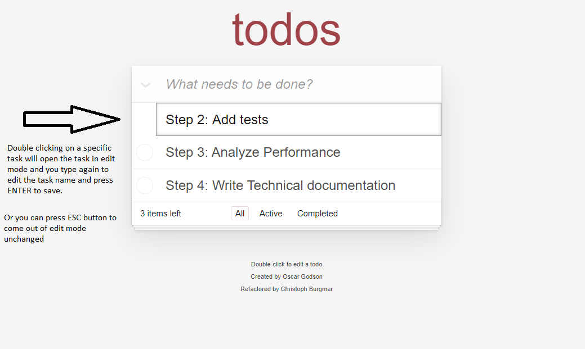
-
If you want to delete a task, hover the mouse over to the desired task and click on the red cross button to delete it
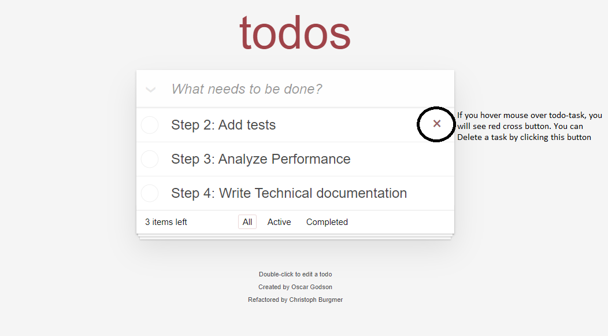
About the Code
MVC:
The codebase is in MVC (Model - View - Controller) structure. This practice got recognised because of it's separation of concerns patterns. This coding practice is widely used by multiple frameworks and technologies, ASP.NET MVC, angular to be few named among those.
It works the way that View, Model and controller and disconnected and they are communicating with each other.
View:
View is what the user sees. It's job is to communicate with the Controller to pass and receive the data to and from the controller. View gets the data from the controller and displays it onto the UI and similarly, it gets user's interactions with the view and pass them onto the controller.
Controller:
Controller is the brain of the application. It takes data from the view and after processing, it saves the data using the model. It passes the required info to the view and gets the data persisted using model
Model:
Model has the job of data persistance. Controller asks the Model to perform database jobs. It can be used to retreive or save data in the database.
How the code is working in the Todo-list application:
-
Upon the application load,
Todoclass is initialized and it's job is to loadStore,Model,Template,ViewandControllerwith the necessory properties.function Todo(name) { this.storage = new app.Store(name); this.model = new app.Model(this.storage); this.template = new app.Template(); this.view = new app.View(this.template); this.controller = new app.Controller(this.model, this.view); } -
ModelhasStoreobject to perform DB operations,ViewhasTemplateobject to perform generic rendering changes.Controllerhas bothViewandModelobjects because it communicates with bothViewandModel.model.js:
function Model(storage) { this.storage = storage; } ...view.cs
... function View(template) { this.template = template; this.ENTER_KEY = 13; this.ESCAPE_KEY = 27; this.$todoList = qs('.todo-list'); this.$todoItemCounter = qs('.todo-count'); this.$clearCompleted = qs('.clear-completed'); this.$main = qs('.main'); this.$footer = qs('.footer'); this.$toggleAll = qs('.toggle-all'); this.$newTodo = qs('.new-todo'); } ... -
On load,
ControllerusesView's bind function to bind the UI with it's own methods ascallbacksso thatViewis connected to theControllerupon userevents.controller.js:
function Controller(model, view) { var self = this; self.model = model; self.view = view; self.view.bind('newTodo', function (title) { self.addItem(title); }); self.view.bind('itemEdit', function (item) { self.editItem(item.id); }); ... }view.js
... View.prototype.bind = function (event, handler) { var self = this; if (event === 'newTodo') { $on(self.$newTodo, 'change', function () { handler(self.$newTodo.value); }); } else if (event === 'removeCompleted') { $on(self.$clearCompleted, 'click', function () { handler(); }); }; ... -
ControllerusesView'srender()method to update / render the view with the latest changes made byControllerusingModel.controller.js
... Controller.prototype.addItem = function (title) { var self = this; if (title.trim() === '') { return; } self.model.create(title, function () { self.view.render('clearNewTodo'); // NOTE HERE self._filter(true); }); }; ...view.js
... View.prototype.render = function (viewCmd, parameter) { // viewCmd = "clearNewTodo" here var self = this; var viewCommands = { showEntries: function () { self.$todoList.innerHTML = self.template.show(parameter); }, clearNewTodo: function () { self.$newTodo.value = ''; } ... }; viewCommands[viewCmd](); }; ... -
ViewsavesTemplates object as its properties.Templatehas a central common code that holds generic methods to perform UI operations like addingeventlisteners, rendering todo item etc -
Overall functionality goes like:
- User does something on the UI
- As on load, controller has binded its methods as callbacks to the View's elements using Template, request comes to the scope of controller.
Controllerexecutes its method when the request reaches it using user interaction on theView. This method is responsible for communication with Model to store the data / retrieve the data from the database- Model has a property of store object. Model uses this object to database changes to have central and reusable code.
How to run the Tests
- Go to the test folder existing in the root of the project.
- Run the file SpecRunner.html using your preferred browser.
- If all the tests have passed, then a Green bar will displayed showing total tests and 0 failures and the page will display in Green text. If failed, red bar will error count will be displayed, along with the red text on the page.
How the tests work in the project using Jasmine
-
Testing is using the same MVC framework, upon which the application is built. This is the benefit of the MVC framework; to get the reusability out of the application in the form of separated business logic (Controller).
-
Model and the View are fake and they are setup in a way to replicate the functionality of the application using Controller of our core application to test the working of the business logic.
-
Before any test is executed, we setup our MVC structure in the JavaScript file containing jasmine tests. Model and View are fakes and Controller is real both model and view are passed to it to form a connection between the three. We are using jasmine's
beforeEachmethod to achieve thatbeforeEach(function () { model = jasmine.createSpyObj('model', ['read', 'getCount', 'remove', 'create', 'update']); view = createViewStub(); subject = new app.Controller(model, view); }); -
Model object is a jasmine spy object which will check if the model's declared methods are called with specific callback functions or not.
model = jasmine.createSpyObj('model', ['read', 'getCount', 'remove', 'create', 'update'] -
Viewis an object withbindandtriggermethods, andrenderas a spy object fromjasminewhich will only track calls of theModelobject. (It wont check for thecallbackfunctions like for the case ofModel)view = createViewStub(); ... var createViewStub = function () { var eventRegistry = {}; return { render: jasmine.createSpy('render'), bind: function (event, handler) { eventRegistry[event] = handler; }, trigger: function (event, parameter) { eventRegistry[event](parameter); } }; }; -
Subjectis theControllerobject which hasViewandModelobjects in it. -
A simple test case starts with 1. setting up the Model with some data, 2. setting up the view (2a. AND / OR triggering some event using View object's trigger method) and 3. expecting some output from the Controller and testing it like below:
it('should show entries on start-up', function () { // TODO: write test var todo = [ {title: 'my todo', completed: true}, {title: 'my todo', completed: false}, {title: 'my todo', completed: true} ]; setUpModel(todo); subject.setView(''); expect(view.render).toHaveBeenCalledWith('showEntries', todo); }); -
As the
ViewandControllerare bind together, we can trigger a certain method usingtriggerofViewobject, which can act as a fake event that got triggered. This will take the scope to theController(with some data that we pass on) and hence we can test theModel's functions or theView'sRenderbeing called as acallbackwith specific parameters.view.trigger('toggleAll', {completed: true}); -
Thanks to Jasmin, we can validate Controller's business logic using expect method. To validate Model operation occuring in the Controller's business logic, we use:
expect(model.read).toHaveBeenCalledWith({completed: true}, jasmine.any(Function)); -
Similarly, to validate View's render operation occuring in the Controller's business logic, we use:
expect(view.render).toHaveBeenCalledWith('showEntries', {title: 'my todo', completed: true});
Performance Evaluation
Competitor:
The competitor website is todolistme.net is a full fledged solution with a lot other features as well. It has an intuitive UI and it is easy to use. The user interface is very good and it has made the functionalities very easy to understand and use. Some of the features which separate it from our app are:
-
Sorting of the tasks
-
Can create multiple projects and add todos in them.
-
Separation of Today / Tomorrow tasks.
-
Print functionality to print the tasks.
-
New Category and new lists functionality
-
Login / Register
-
Server maintained data and sync able.
Performance Evaluation
Competitor:
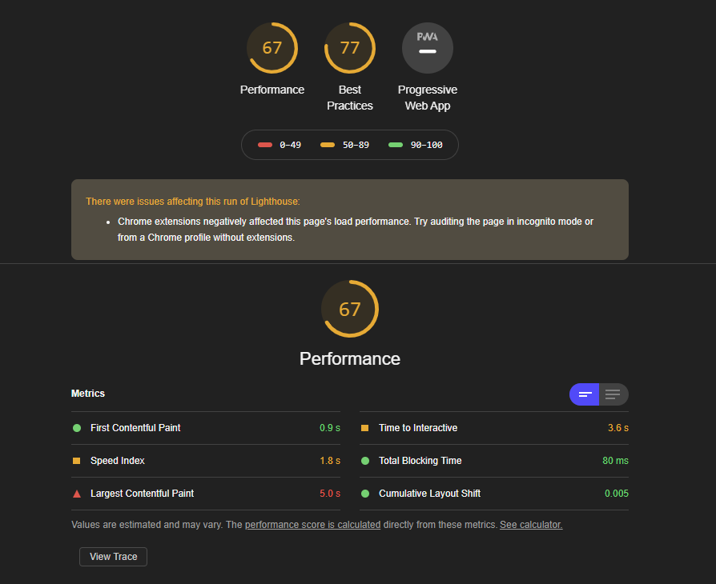
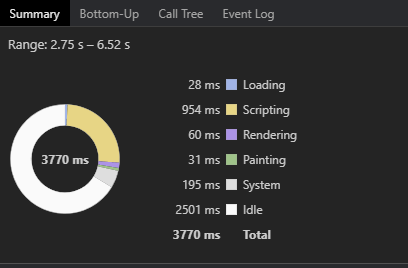
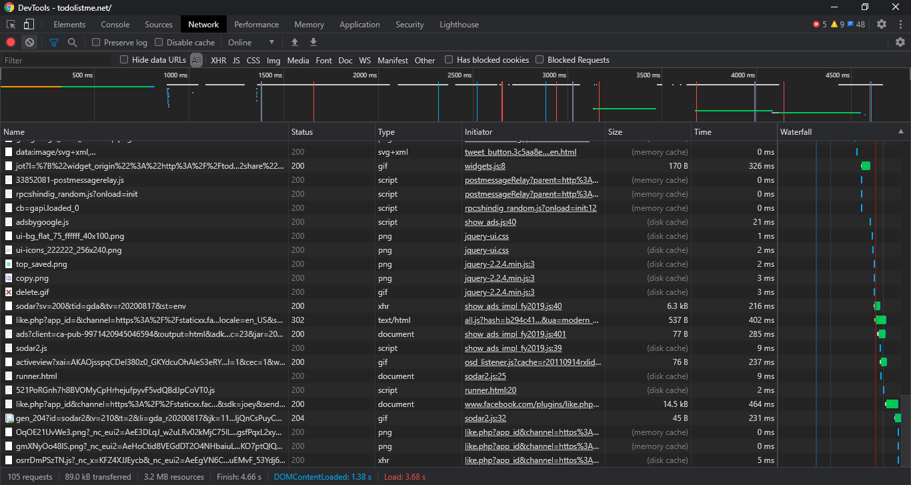
Speed index, Time to interactive and Largest contentful paint are three points where improvements can be made
Suggestions to improve:
-
Avoid unnecessary downloads to improve rendering speed
-
Usage of caching as much as possible
-
Optimization of images to use sprites or resized images
-
Limit the number of fonts used in the app.
-
Images which aren’t important at the user’s first contact should lazy load until the user scrolls down.
-
Minify and uglify CSS and JS using gulp and babel
Our Application
Our application is purely client javascript based and since it does not have a server, it is very fast compared to competitor. But not having a server is also its drawback because a user is unable to save its data permanently.
Performance evaluation:
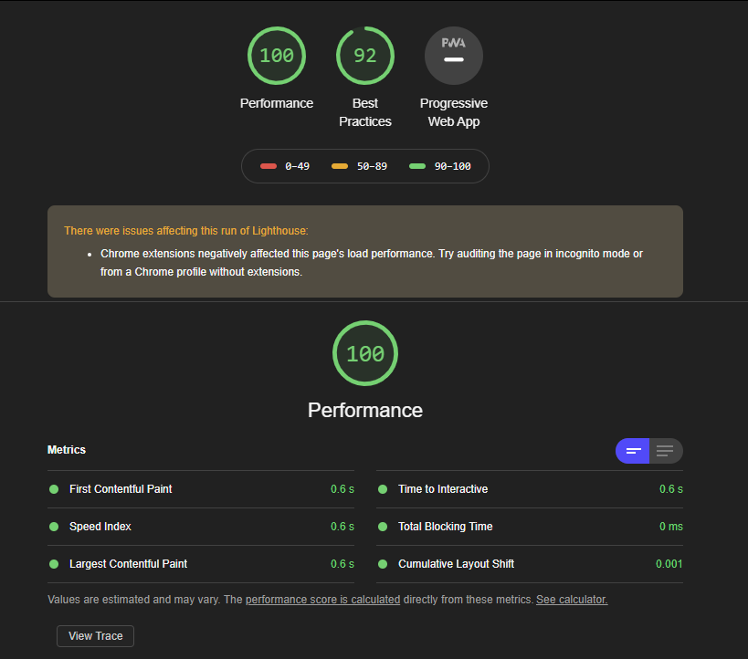
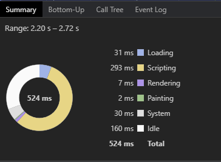 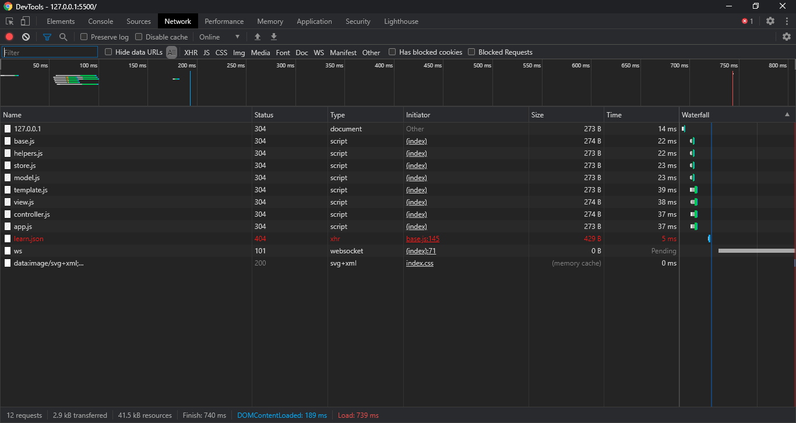
-
Since it is purely Client-JS based and does not have a server, it is very fast
-
To increase load time, CSS and JS should be minified and uglified using gulp and babel.
-
Some of the coding practices should be altered and ES6+ javascript should be used
-
Object Oriented Javascript practices using ES6+ should be used
-
Sprites should be used for images to increase load speed, or image resizing.
Scalability:
We can scale this applciation easily by following some of observations:
-
Having a server side to store the data somewhere
-
Allowing users to register and login
-
Allowing users to create multiple projects and lists which will scale the app throughout
-
Minify JS and CSS and uglify them on production
-
Using lazy loading as much as possible
-
Using sprites for images or using resized images
-
Code should be converted to ES6+ code and OOP power should be used.